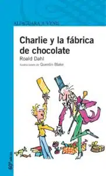
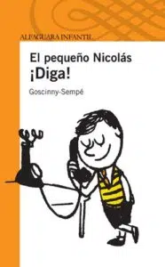
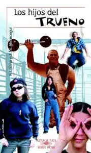
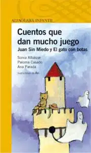

iBiblioteca
iBiblioteca

Charlie y la fábrica de chocolate
Año: 2021
Autor: Roald Dahl

El pequeño Nicolás
Año: 2013
Autor: Roald Dahl

Los hijos del Trueno
Año: 2007
Autor: F. Lalana y J. M. Almárcegui

Cuentos que dan mucho juego
Año: 2011
Autor: Varios Autores